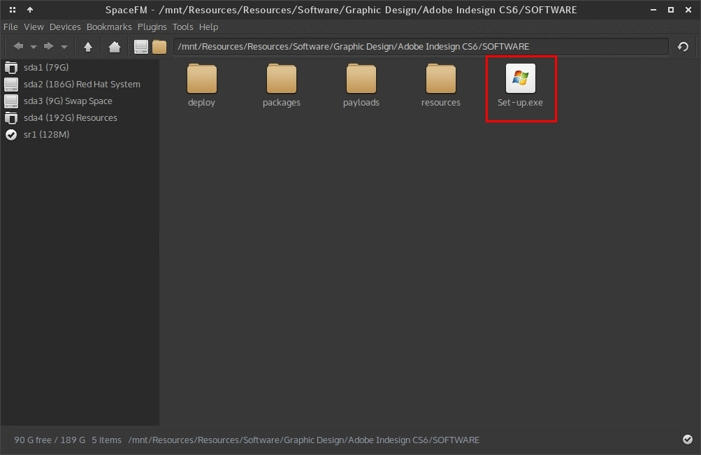
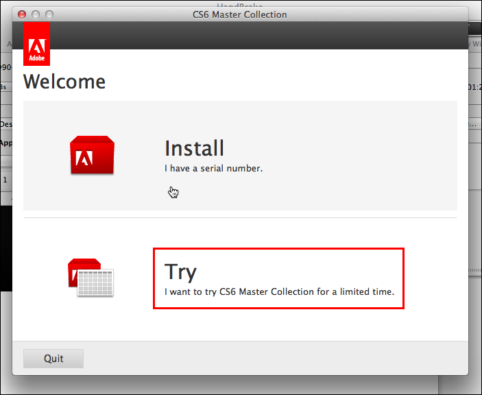
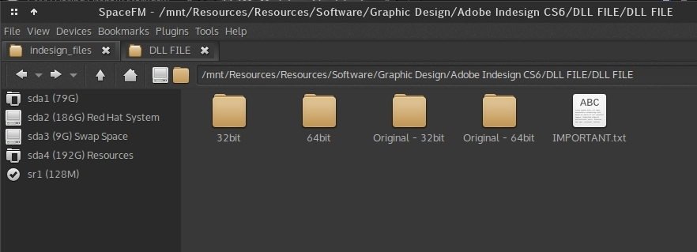

Since we are using a cracked version of Indesign and Photoshop, during installation there must be no internet connection.
Do not install Photoshop and Indesign at the same time. First install either of these and then the other. This guide is for both Photoshop and Indesign.
For those of you using Photoshop/Indesign CC version, the steps are similar.
First step is to start the installation.

I currently do not have Windows, so I cannot post screenshots of actual installation. But the installation process is straight-forward.
Since you have already disconnected the internet, run the Set-up.exe file as shown above.
Soon you will see this window. Click on the "Try" option (marked with a red rectangle).

After this step, there is nothing else to do except clicking next, next and so on. DO NOT touch any other options, just let them be.
After the installation completes, close the installer. DO NOT connect to the internet.
Open the app (Indesign or Photoshop) once, and then close it. This is important, you have to run the app once in trial mode.
Now comes the fun (cracking) part. This is somewhat peculiar step so watch closely. (I think this is the thing that was bugging you for days).
Open the folder where the cracked DLL files are (must be named either 'Cracked DLL' or 'DLL FILES')

Ignore the folders named Original-32bit and Original-64bit for now. That file marked IMPORTANT.txt is also not so important.
The two folders 32-bit and 64-bit each have a file known as amtlib.dll.
Most of you are using 64-bit Windows. Open the C: drive. (If you use a 32-bit version of Windows, you only have to care about the 32-bit folder).
There are two folders - "Program Files" and "Program Files (x86)".
"Program Files" store 64-bit software, each and every file in this folder is for 64-bit systems.
"Program Files (x86)" store 32-bit software files.
Now, the amtlib.dll from "32-bit" folder must go into the folder C:\Program Files (x86)\Adobe\Adobe InDesign CS6.
And, the amtlib.dll file from "64-bit" folder must go into C:\Program Files\Adobe\Adobe Media Encoder CS6
Windows will ask you to overwrite, just do it.
Be Careful, DO NOT copy amtlib.dll from Indesign folder, use the one provided by Photoshop.
The Photoshop installation folder has similar "32-bit" and "64-bit" folders in "Cracked DLL" folder.
Copy 64-bit amtlib.dll into C:\Program Files\Adobe\Adobe Photoshop CS6
Copy 32-bit amtlib.dll into C:\Program Files (x86)\Adobe\Adobe Photoshop CS6
There is an extra step for Photoshop, there is a folder known as OfficialUpdatePatch which contains AdobePatchInstaller.exe. After the cracking step, just run it. (This will simply update Photoshop).
Now you can connect to the Internet. Start Photoshop / Indesign.
This is not a fool-proof method, someday Adobe might discover that you are using cracked software and so the software may pop-up an error message.
However, it will work flawlessly in the University, because it cannot connect through proxy.
If you have any furthur problem regarding installation, just ask away on the WhatsApp group.